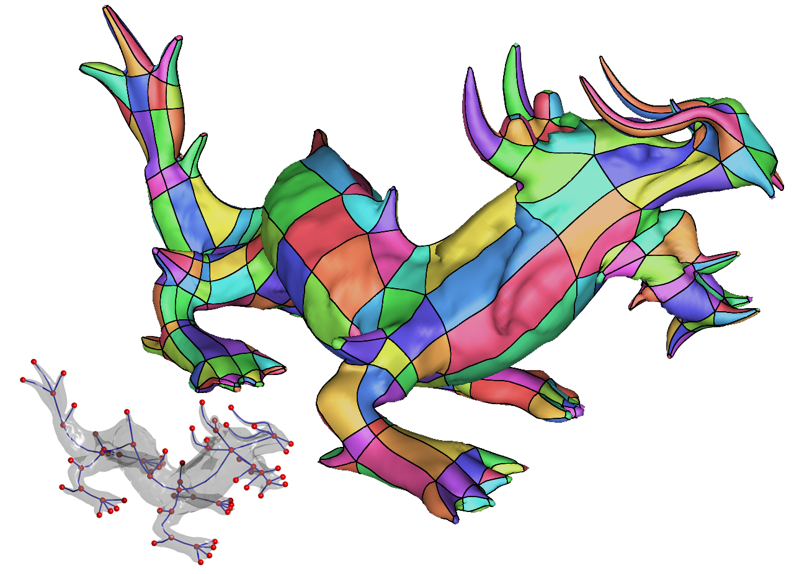
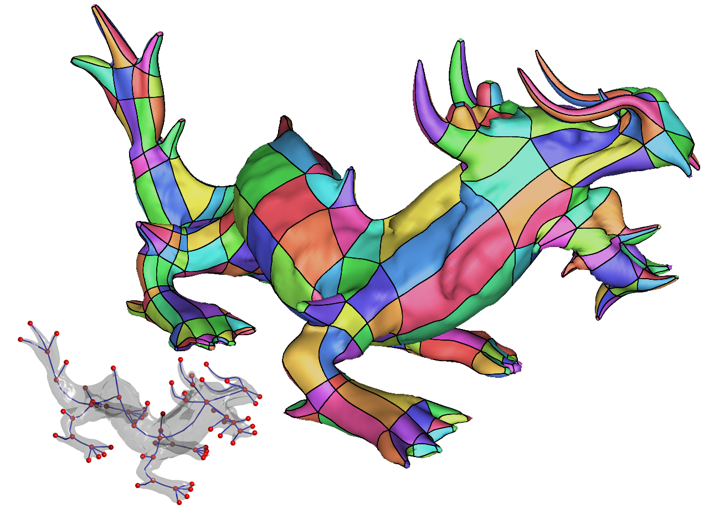

Extraction of the Quad Layout of a Triangle Mesh Guided by its Curve-Skeleton
 

ACM Transactions On Graphics 2015
presented at SIGGRAPH Asia 2015
Authors
Usai Francesco , Livesu Marco, Puppo Enrico, Tarini Marco, Scateni RiccardoAbstract
Starting from the triangle mesh of a digital shape, mainly an articulated object, we produce a coarse quad layout that can be used in character modeling and animation. Our quad layout follows the intrinsic object structure described by its curve skeleton; it contains few irregular vertices of low degree; it can be immediately refined into a semi-regular quad mesh; it provides a structured domain for UV-mapping and parametrization. Our method is fast, one-click and it does not require any parameter setting. The user can steer and refine the process through simple interactive tools during the construction of the quad layout.
Links and Downloads
BibTex
Available sooon
Image Gallery
This website uses a third-party library (Google Analytics) that uses cookies to track how many visits it receives.
Staying on this page you accept the use of cookies. If you want to know more about it and/or opt-out, read the Privacy Policy.